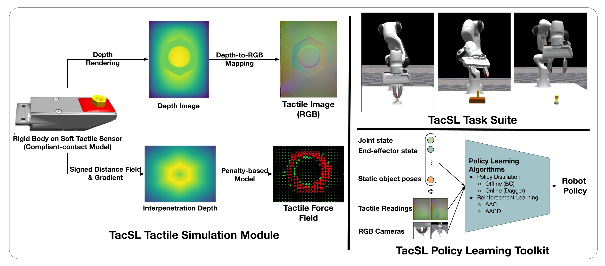

For both humans and robots, the sense of touch, known as tactile sensing, is critical for performing contact-rich manipulation tasks. Three key challenges in robotic tactile sensing are 1) interpreting sensor signals, 2) predicting sensor signals in novel scenarios, and 3) learning sensor-based policies. For visuotactile sensors, interpretation has been facilitated by their close relationship with vision sensors (e.g., RGB cameras). However, prediction is still difficult, as visuotactile sensors typically involve contact, deformation, illumination, and imaging, all of which are expensive to simulate; in turn, policy learning has been challenging, as simulation cannot be leveraged for large-scale data collection. We present TacSL (taxel), a library for GPU-based visuotactile sensor simulation and learning. TacSL can be used to simulate visuotactile images and extract contact-force distributions over 200× faster than the prior state-of-the-art, all within the widely-used Isaac Gym simulator. Furthermore, TacSL provides a learning toolkit containing multiple sensor models, contact-intensive training environments, and online/offline algorithms that can facilitate policy learning for sim-to-real applications. On the algorithmic side, we introduce a novel online reinforcement-learning algorithm called asymmetric actor-critic distillation (AACD), designed to effectively and efficiently learn tactile-based policies in simulation that can transfer to the real world. Finally, we demonstrate the utility of our library and algorithms by evaluating the benefits of distillation and multimodal sensing for contact-rich manipulation tasks, and most critically, performing sim-to-real transfer.
